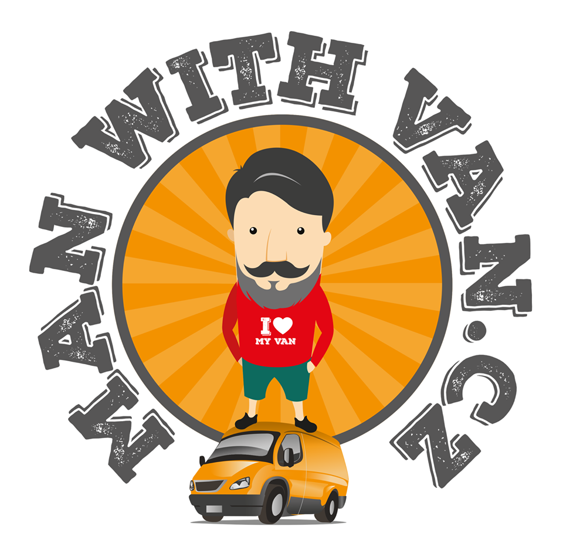

<% if (webpackConfig.htmlElements.headTags) { %> <%= webpackConfig.htmlElements.headTags %> <% } %> <%= htmlWebpackPlugin.files.webpackManifest %> <% if (htmlWebpackPlugin.options.metadata.isDevServer && htmlWebpackPlugin.options.metadata.HMR !== true) { %> <% } %>

Man With Van Loading...